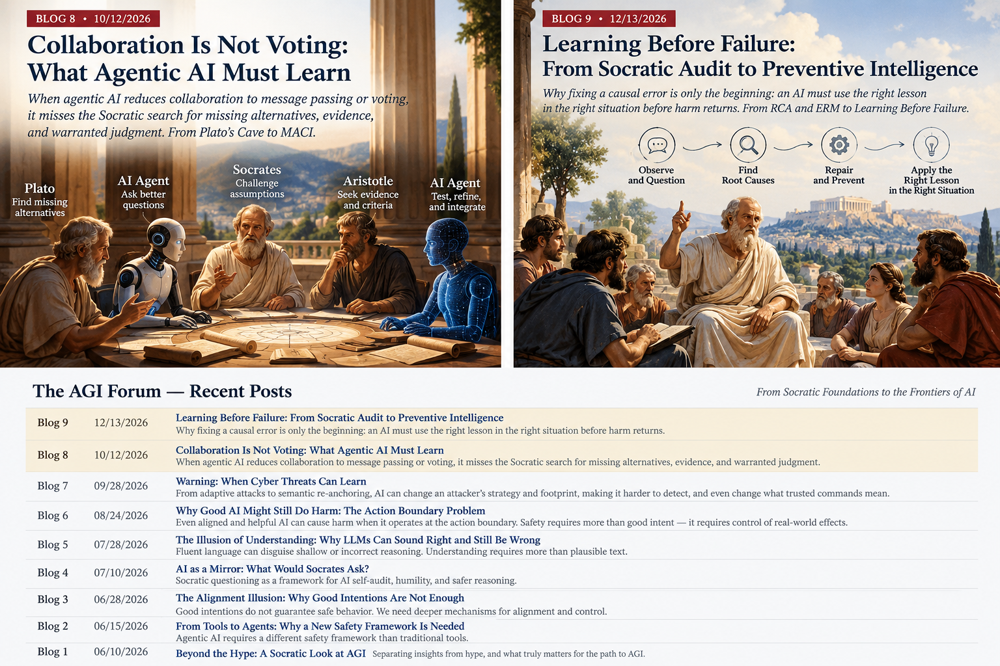

How can AI learn from past errors and prevent the same mistakes in the future?
Current methods address important pieces of this problem, but they do not by themselves solve the whole problem. An AI can be corrected after a mistake, receive feedback, write a reflection, or store a lesson in memory. Yet none of those steps guarantees that, when a similar situation appears later, the system will recognize the warning signs, retrieve the right lesson, determine that the lesson actually applies, and use it before the failure happens again.
Suppose an AI makes a serious mistake. We show it what went wrong, and afterward it can explain the lesson perfectly. Has it learned? Not necessarily. Explaining yesterday's failure is different from preventing tomorrow's repetition.
Humans understand this intuitively. A good driver does not merely explain why an earlier accident happened; the driver changes behavior when the same danger appears again. A physician does not simply document an adverse reaction; the lesson matters when it helps protect the next patient in time.
This is the gap we call Learning Before Failure. The challenge is not simply to make AI remember its mistakes. It is to make validated experience change future behavior when, where, and only when it should.
Our research leading to this point has moved through three questions. First: can an AI recognize flawed reasoning even when it does not know the correct answer? Second: can it identify why the reasoning failed and repair the causal mistake? Third, and most importantly here: once a lesson has been learned, can the system recognize when it matters again and act in time?
Existing approaches have made substantial progress on feedback, reflection, memory, and post-hoc correction. The harder end-to-end requirement is connecting a supported lesson from the past to the right future decision before harm recurs, while avoiding the equally dangerous mistake of applying the wrong lesson.
That final step turns memory from a record of the past into something potentially much more valuable: preventive intelligence.
To test this idea, we use a simulated rescue mission. A flood is rising, information may be stale, vehicles can fail, and decisions have deadlines. The important question is not whether the AI can explain a past mistake. It is whether a lesson from that mistake reaches the next decision soon enough to prevent another failure.
This essay follows three steps in a research program: Recursive Causal Audit (Findings of ACL 2026), Epistemic Regret Minimization (ERM, 2026), and Learning Before Failure: The Preventable Moment (LBF), publicly archived on Zenodo. They address different parts of one problem: how an intelligent system turns criticism and experience into better future judgment.[1][2][3]
The professor who does not know the answer
Imagine a doctoral student presenting a brilliant new idea. The student may understand the underlying model or experiment far better than the senior professor. A good mentor need not claim to possess the undiscovered result. Instead, the professor asks: What assumption connects this evidence to that conclusion? What alternative explanation have you excluded? Did you confuse correlation with an intervention? Would your claim survive a counterexample?
These questions can expose a defective argument even when neither student nor professor knows the ultimate answer. The Socratic tradition made such inquiry central to intellectual life. One does not become wise by agreeing with the most confident speaker or by demanding an answer key for every question. One learns to examine the reasons for a belief.[4]
Consider a familiar logical error: If a road floods, its surface becomes wet. The road is wet. Therefore, it flooded. The road might be wet because of rainfall or a water truck. The inference is invalid even if the road did, in fact, flood. The difference between correct conclusion and correct reasoning is where our first research step begins.

First step: ACL 2026 — audit the reason, not the answer key
In Diagnosing and Mitigating Sycophancy and Skepticism in LLM Causal Judgment, published in Findings of ACL 2026, we introduced Recursive Causal Audit (RCA). The independent judge does not see the gold-answer labels. It examines the model's stated causal derivation, internal consistency, whether the conclusion follows from the derivation, and whether a forceful user's hint has improperly displaced that reasoning.[1]
This is an operational form of the Socratic idea: ask a model to explain its reasoning, examine the proposed warrant, and challenge the step that does not follow. The goal is not to have another model confidently guess the same answer. It is to make a defect in the reasoning visible.
The paper also identified two opposing failures. In sycophancy, a model bends toward the user's preferred answer. In excessive skepticism, it becomes so reluctant to accept evidence that it rejects valid inferences or declines to act. Both can make a system unreliable. An effective reasoning audit must recognize when to challenge and when a conclusion is adequately supported.
Second step: ERM — correct a causal model, not just its output
A model can be right for the wrong reason. Suppose hospital readmissions fall after staffing levels rise. If the model claims staffing caused the improvement while ignoring a simultaneous discharge-policy change, a correct-looking answer may be supported by an invalid causal story. Rewarding only the final outcome risks strengthening that shortcut.
Epistemic Regret Minimization: Label-Free Causal Critique Beyond Outcome Reward, developed with Longling Geng, takes this problem deeper. ERM critiques the causal structure of the exposed reasoning: unexamined confounders, correlation–intervention confusion, unjustified counterfactual steps, and missing causal paths. It then supplies targeted feedback so the reasoner can reconsider the defective inference.[2]
Crucially, this need not begin with a known correct answer or a complete true causal graph. Established causal principles can identify a missing assumption or unsupported inference. But critique still needs evidence and disciplined verification: finding a plausible flaw is not the same as discovering ground truth.
ERM also challenges an overly narrow conception of feedback. Reinforcement learning does not universally require ground-truth answer labels: many reward signals are possible. The deeper issue is that rewarding what happened does not by itself explain why it happened. An agent that repeatedly succeeds for a spurious reason may be accumulating a dangerous weakness that outcome scores will not expose.[5]
Third step: Learning Before Failure — remembering is not using
Now imagine that an agent already has a collection of well-formed lessons from earlier rescue missions. One lesson concerns a rising flood crest; another, a stale report; a third, an unreliable vehicle. Each describes a failure, a supported correction, the situations where it applies, and the time left to act.
All the lessons are present in memory. Yet the agent may still select the wrong correction, overlook the relevant lesson, or act after the prevention window has closed.
The 2026 study Learning Before Failure: The Preventable Moment, by Edward Y. Chang and J. Roy, develops this principle and tests an implementation called LBF-Gate. Its key scientific choice is to hold the underlying model and the stored lesson bank fixed while varying how those same lessons are supplied to a planner.[3]
In the central comparison, one agent sees the entire structured lesson bank with no special indication of what applies. LBF-Gate sees that same complete bank, but a deterministic gate checks available scope and warning-sign fields and marks the relevant lesson as an operative constraint. The model still chooses the action and its start time. A third baseline receives free-text reflections about prior failures.
This is not simply a test of better writing, a larger model, or a shorter prompt. It isolates whether connecting a previously known lesson to the live decision changes behavior.
What the flood-rescue experiment found
| Held-out simulated mission loss | Same lessons, unmarked | LBF-Gate | Reduction |
|---|---|---|---|
| GPT-5.4 mini | 0.1948 | 0.0864 | 0.1084 |
| Claude Sonnet 4.6 | 0.2514 | 0.1648 | 0.0866 |
The metric is the study's normalized simulated mission loss on a 0–1 scale; lower is better. These are absolute loss reductions, not percentage-point improvements in real rescue success. The comparison uses 375 independent load-paired blocks per recurrence class per model, with the full study preserving 162,000 planned evaluation slots, including failures. Source: Learning Before Failure: The Preventable Moment, Section 5.[3]
The study reports positive lower bounds for all three tested recurrence classes on both primary models, while meeting its prespecified tolerances for cases where applying a lesson is inappropriate. Gating also outperforms the free-text reflection baseline in the primary comparisons. These are results in a constructed search-and-rescue environment, not physical rescue deployments.
The dangerous discovery: the wrong lesson can be worse than no lesson
Perhaps the study's most instructive result is its negative control. The researchers took the same request, the same stored bank, the same framing, and changed which lesson was marked. When the marked lesson was the wrong one, much of the advantage disappeared.
For GPT-5.4 mini, wrong marking increased normalized loss by about 0.113 relative to leaving the bank unmarked. Instead of simply choosing a bad action, the model often escalated the decision to a human: the reported escalation rate rose from about 2% under unmarked memory to 56% with the wrong mark. Roughly half of those escalations completed too late to prevent the modeled failure. On Claude, wrong marking generally erased the benefit without the same measured degree of degradation.[3]
This turns the usual enthusiasm for AI memory upside down. A lesson is not necessarily helpful just because it was learned from a previous incident. The old event may involve a different cause, a different authority, a different resource, or a different deadline. Applying it in the wrong situation can itself become the next error.
Four obligations of a useful memory
These requirements apply beyond flood rescue. In medicine, a lesson about one patient's adverse reaction cannot be copied blindly to another patient. In finance, a past market regime may have ended. In physical robotics, a remembered safe route may now be blocked. In human relationships, yesterday's sensible advice can become today's mistake when circumstances or responsibilities change.
From critique to preventive intelligence
The three stages answer increasingly demanding questions. RCA asks whether the stated reasoning warrants the stated conclusion, including when a judge does not know the answer. ERM asks whether a causal explanation contains a defect that should be repaired. LBF asks whether a lesson supported by an earlier audit can change a new decision in time, and whether inappropriate reuse can be avoided.
| Research step | The central question | What it contributes |
|---|---|---|
| RCA — ACL 2026 | Does the conclusion follow from the derivation? | Gold-label-blind process audit |
| ERM — 2026 | Which causal assumption or inference needs repair? | Targeted causal critique and correction |
| LBF — 2026 study | Will an earlier lesson improve this decision before failure? | Scope-aware, timely lesson use with negative controls |
They are distinct research results, not a claim that one complete autonomous learning loop has already been demonstrated. In particular, the LBF experiment begins with supplied audits and symbolic applicability fields; it tests how agents use those records, not whether an agent can independently discover the correct causal explanation in every domain. Connecting reliable audit, diagnosis, source validation, persistent memory, and real-world authorization remains the architectural work ahead.
That is also where the broader System-2 Reasoning, Volume II of The Path to AGI, and the emerging MACI implementation enter the picture. A capable agent needs more than a powerful predictor. It needs a disciplined way to interrogate reasoning, preserve corrections, recognize when they apply, and verify their consequences across time.[6]
What I would ask of the next generation of AI agents
After a mistake, the agent should be able to explain what failed and distinguish that observation from the causal explanation. It should identify which evidence supports a correction, where that correction applies, and what would invalidate it. It should carry the lesson to the responsible decision-maker and intervene before the prevention window closes. And it should know when the situation is sufficiently different that the old lesson must not be applied.
None of this replaces the need for sound evidence, external grounding, authorization, or human accountability. It makes those requirements more operational. The measure of learning is not merely whether memory contains a good sentence about the past. It is whether the right future behavior changes—and whether the system avoids damaging new situations by overgeneralizing from old ones.
A model that corrects its answer after failure has learned something about yesterday.
An agent that recognizes the warning signs, retrieves the right causal lesson, and acts in time may prevent tomorrow's failure.
That is the direction of preventive intelligence: not simply remembering mistakes, but learning when, why, and how a past mistake should change the next decision.
References and reading
- Chang, Edward Y. (2026). Diagnosing and Mitigating Sycophancy and Skepticism in LLM Causal Judgment. Findings of ACL 2026, 8769–8789. DOI: 10.18653/v1/2026.findings-acl.427.
- Chang, Edward Y., & Geng, Longling (2026). Epistemic Regret Minimization: Label-Free Causal Critique Beyond Outcome Reward. arXiv:2602.11675, preprint.
- Chang, E. Y., & Roy, J. (2026). Learning Before Failure: The Preventable Moment. Zenodo. DOI: 10.5281/zenodo.22309384.
- Chang, Edward Y. (2023). Prompting Large Language Models With the Socratic Method. IEEE CCWC, March 2023. Philosophical context: Stanford Encyclopedia of Philosophy, Socrates.
- Sutton, Richard S., & Barto, Andrew G. (2018). Reinforcement Learning: An Introduction. MIT Press, 2nd edition.
- Chang, Edward Y. (2026). System-2 Reasoning: From Semantic Anchoring to Causal Intelligence. The Path to AGI, Volume II. ACM Books, July 23, 2026.